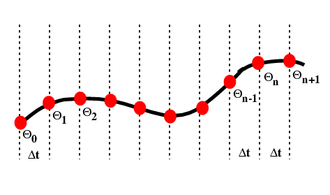
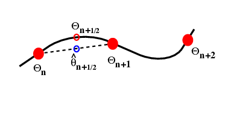

Numerical Modeling in Solid Earth Dynamics¶
Introductory Remarks¶
We have considered the application of mathematical reasoning to construct models of the behaviour of physical systems. Unfortunately, most of these models do not have analytic solutions or the solutions are so complicated that they don’t help us understand the problem. The alternative is to solve such problems numerically (approximately). Such solutions are also possible for far more elaborate systems than we would even consider trying to obtain exact solutions for.
On the other hand, numerical modeling only provides solutions to mathematical equations and only approximate solutions at that. Unless the modeler has an understanding of the methods and the models themselves, then the output of some computer code may be terribly misleading.
It is always necessary to design a numerical experiment as carefully as one would a physical experiment — although it won’t blow up and kill you. It is possible to change the laws of physics in the numerical model often inadvertantly, so a careful analysis of the problem first is not a bad idea.
This part of the course contains some really hard material. This is deliberate because the workings of most computer codes are actually based on some astonishingly intricate mathematics. This is really intended to provide a decent reference for people coming back to use finite elements or other numerical methods later.
Numerical modeling primer¶
We start with the numerical solution of a very simple differential equation. In fact we choose something simple enough that we already know the answer.
This is the equation which governs radioactive decay, in which case \(\theta\) is the amount of the radioactive isotope remaining and \(d\theta / dt\) is the activity that we can measure. \(k\) is closely related to the half life.
The solution to this equation is
where \(\theta_0\) is the amount of the radioactive material remaining. The same equation also describes the cooling of, say, a cup of coffee. In this case we interpret \(\theta\) as the excess temperature (above room temperature).

We want to march forward in time from our starting point where \(\theta = \theta_0\) to obtain the value of \(\theta\) at later times. To do this, we need to approximate the original differential equation, and, in particular, the value of the time derivative at each time. There are a number of ways to do this.
A first order numerical approximation}¶
Assume that the variation in \(\theta(t)\) is linear, i.e.
where we use a local time coordinate \(t' = t - n\Delta t\), so that when we differentiate
To determine the approximation for the derivative therefore becomes the solution to the following equation:
This is a first order difference expression for the derivative which we substitute into the original differential equation (\ref{eq:ode_decay}) at the current timestep
This rearranges to give us a time-marching algorithm:
It is an indication of the fact that this problem is really not all that difficult that this difference equation can be written recursively to give:
In a moment we will compute some values for this expression to see how accurate it is. First we consider whether we can improve the accuracy of the approximation by doing a bit more work.
Higher order expansion¶
First we try fitting the local expansion for \(\theta\) through an additional point. This time we assume that the variation in \(\theta(t)\) is quadratic, i.e.
The local time coordinate is \(t' = t - (n-1)\Delta t\), and when we differentiate
To solve for \(\beta\) and \(\gamma\) we fit the curve through the sample points:
Which we can solve to give this:
By substituting into \( (\ref{eq:dthdt2}) \), and then into the original differential equation \( (\ref{eq:ode_decay}) \) we obtain the following
The difference approximation to the derivative turns out to be the average of the expressions for the previous derivative and the new derivative. We have now included information about the current timestep and the previous timestep in our expression for the value of \(\theta\) at the forthcoming timestep:
A comparison of the two schemes¶
How well do these two methods perform, and what difference does the choice of \(\Delta t\) make on the accuracy ?
t |
\(^1\theta_H\) |
\(^1\theta_h\) |
\(^2\theta_H\) |
\(^2\theta_h\) |
Exact |
|---|---|---|---|---|---|
0.0 |
1.0000 |
1.0000 |
1.0000 |
1.0000 |
1.0000 |
0.1 |
— |
0.9000 |
— |
0.9000 |
0.9048 |
0.2 |
0.8000 |
0.8100 |
0.8000 |
0.8200 |
0.8187 |
0.3 |
— |
0.7290 |
— |
0.7360 |
0.7408 |
0.4 |
0.6400 |
0.6561 |
0.6800 |
0.6728 |
0.6703 |
0.5 |
— |
0.5905 |
— |
0.6014 |
0.6063 |
0.6 |
0.5120 |
0.5314 |
0.5280 |
0.5525 |
0.5488 |
0.7 |
— |
0.4783 |
— |
0.4909 |
0.4966 |
0.8 |
0.4096 |
0.4305 |
0.4688 |
0.4543 |
0.4483 |
0.9 |
— |
0.3874 |
— |
0.4001 |
0.4066 |
1.0 |
0.3277 |
0.3487 |
0.3405 |
0.3743 |
0.3679 |
Results of the numerical simulation of the decay equation. \(^1\theta_H\) is from the first order expansion of \(\theta(t)\), at a timestep of \(\Delta t=0.2\), and \(^2\theta_H\) is the second order expansion at \(\Delta t=0.2\); other calculations are at \(\Delta t = 0.1\). \(^1\theta_h\) is the linear expansion, \(^2\theta_h\) results from the quadratic expansion of \(\theta(t)\). The actual solution is also shown.
The results are more accurate when a smaller timestep is used although it requires more computation to achieve the greater accuracy. Higher order expansion also increases the accuracy and may be more efficient in terms of the number of computations required for a given level of accuracy. Note, however, that the supposedly better quadratic expansion produces an error which oscillates as time increases. Does this error grow ? Does this make second order expansions useless ?
Second Order Runge-Kutta¶

The Runge-Kutta approach to higher order integration methods is illustrated in the figure. The idea is to estimate the gradient \(d \theta / d t\) at the half way point between two timestep values. This is done in two stages. Initially a first order estimate, \(\hat{\theta}\) is made for the value of the function \(\theta\) at \(t=t+\Delta t /2\) in the future. This value is then subsituted into the differential equation to obtain the estimate for the gradient at this time. The revised gradient is then used to update the original \(\theta(t)\) by an entire timestep.
The first order step is
Substitute to estimate the gradient at the mid-point
Use this value as the average gradient over the interval \(t\rightarrow t+\Delta t\) to update \(\theta\)
It’s worth noting that the Taylor expansion of the solution should look like
The Runge Kutta method can be extended by repeating the estimates on smaller regions of the interval. The usual choice is fourth order RK. This is largely because, obviously, it’s accurate to fourth order, but also because the number of operations to go higher than fourth order is disproportionately large. See Numerical Recipes for a discussion on this and better methods for ODE’s.
Our First Code¶
The simplest way to answer our earlier question is to code the methods and see. The following is a script which computes the first and second order expressions and the Runge-Kutta method, and compares with the “exact” solution (which is numerical as well, of course, but computed through series expansions and the like).
# Compare various ways to integrate the
# ODE for radioactive decay / Newton's law of cooling.
# Assume decay constant of 1.0
import math
timestep=0.1;
# Initial value ...
theta1_0 = 1.0
theta2_0 = 1.0
thetaRK2_0 = 1.0
# First timestep (by hand, then automate for subsequent cases)
theta1_1 = 0.9
theta2_1 = 0.9
thetaRK_1 = 0.905
# Now we have enough information to automate all the methods
for i in range(2,1001):
time = timestep * i
exact = 1.0 * math.exp(-1.0 * time)
theta1_2 = theta1_1 * (1.0 - timestep)
theta2_2 = theta2_0 - 2.0 * theta2_1 * timestep
thetaRK_2 = thetaRK_1 * (1.0 - timestep + 0.5 * timestep * timestep)
# output data every 25th step
if not (i % 25):
print "Timestep {:04d} {:.4f}\t {:.4e} \t {:.4e} \t {:.4e} \t {:.4e}".format(i,time,theta1_2,theta2_2,thetaRK_2,exact)
# keep old values (not all are needed, of course)
theta1_0 = theta1_1
theta2_0 = theta2_1
thetaRK_0 = thetaRK_1
theta1_1 = theta1_2
theta2_1 = theta2_2
thetaRK_1 = thetaRK_2
""" Output:
Timestep 0025 2.5000 +7.1790e-02 +5.2117e-02 +8.2455e-02 +8.2085e-02
Timestep 0050 5.0000 +5.1538e-03 +3.7201e-01 +6.7987e-03 +6.7379e-03
Timestep 0075 7.5000 +3.6999e-04 -4.4304e+00 +5.6059e-04 +5.5308e-04
Timestep 0100 10.0000 +2.6561e-05 +5.3757e+01 +4.6223e-05 +4.5400e-05
Timestep 0125 12.5000 +1.9068e-06 -6.5219e+02 +3.8113e-06 +3.7267e-06
Timestep 0150 15.0000 +1.3689e-07 +7.9124e+03 +3.1426e-07 +3.0590e-07
Timestep 0175 17.5000 +9.8274e-09 -9.5993e+04 +2.5912e-08 +2.5110e-08
Timestep 0200 20.0000 +7.0551e-10 +1.1646e+06 +2.1366e-09 +2.0612e-09
Timestep 0225 22.5000 +5.0648e-11 -1.4129e+07 +1.7617e-10 +1.6919e-10
Timestep 0250 25.0000 +3.6360e-12 +1.7141e+08 +1.4526e-11 +1.3888e-11
Timestep 0275 27.5000 +2.6103e-13 -2.0796e+09 +1.1977e-12 +1.1400e-12
Timestep 0300 30.0000 +1.8739e-14 +2.5230e+10 +9.8758e-14 +9.3576e-14
Timestep 0325 32.5000 +1.3453e-15 -3.0609e+11 +8.1431e-15 +7.6812e-15
Timestep 0350 35.0000 +9.6578e-17 +3.7135e+12 +6.7143e-16 +6.3051e-16
Timestep 0375 37.5000 +6.9333e-18 -4.5052e+13 +5.5363e-17 +5.1756e-17
Timestep 0400 40.0000 +4.9774e-19 +5.4658e+14 +4.5649e-18 +4.2484e-18
Timestep 0425 42.5000 +3.5733e-20 -6.6311e+15 +3.7640e-19 +3.4873e-19
Timestep 0450 45.0000 +2.5652e-21 +8.0449e+16 +3.1036e-20 +2.8625e-20
Timestep 0475 47.5000 +1.8416e-22 -9.7602e+17 +2.5590e-21 +2.3497e-21
Timestep 0500 50.0000 +1.3221e-23 +1.1841e+19 +2.1100e-22 +1.9287e-22
Timestep 0525 52.5000 +9.4911e-25 -1.4366e+20 +1.7398e-23 +1.5832e-23
Timestep 0550 55.0000 +6.8137e-26 +1.7429e+21 +1.4346e-24 +1.2996e-24
Timestep 0575 57.5000 +4.8915e-27 -2.1144e+22 +1.1829e-25 +1.0668e-25
Timestep 0600 60.0000 +3.5116e-28 +2.5653e+23 +9.7532e-27 +8.7565e-27
Timestep 0625 62.5000 +2.5210e-29 -3.1122e+24 +8.0420e-28 +7.1878e-28
Timestep 0650 65.0000 +1.8098e-30 +3.7757e+25 +6.6310e-29 +5.9001e-29
Timestep 0675 67.5000 +1.2993e-31 -4.5807e+26 +5.4675e-30 +4.8431e-30
Timestep 0700 70.0000 +9.3273e-33 +5.5574e+27 +4.5082e-31 +3.9754e-31
Timestep 0725 72.5000 +6.6961e-34 -6.7423e+28 +3.7172e-32 +3.2632e-32
Timestep 0750 75.0000 +4.8071e-35 +8.1797e+29 +3.0650e-33 +2.6786e-33
Timestep 0775 77.5000 +3.4510e-36 -9.9237e+30 +2.5273e-34 +2.1988e-34
Timestep 0800 80.0000 +2.4775e-37 +1.2040e+32 +2.0838e-35 +1.8049e-35
Timestep 0825 82.5000 +1.7786e-38 -1.4606e+33 +1.7182e-36 +1.4815e-36
Timestep 0850 85.0000 +1.2768e-39 +1.7721e+34 +1.4167e-37 +1.2161e-37
Timestep 0875 87.5000 +9.1663e-41 -2.1499e+35 +1.1682e-38 +9.9824e-39
Timestep 0900 90.0000 +6.5805e-42 +2.6082e+36 +9.6321e-40 +8.1940e-40
Timestep 0925 92.5000 +4.7241e-43 -3.1643e+37 +7.9421e-41 +6.7261e-41
Timestep 0950 95.0000 +3.3914e-44 +3.8390e+38 +6.5486e-42 +5.5211e-42
Timestep 0975 97.5000 +2.4347e-45 -4.6575e+39 +5.3996e-43 +4.5320e-43
Timestep 1000 100.0000 +1.7479e-46 +5.6505e+40 +4.4522e-44 +3.7201e-44
"""
Clearly, the quadratic expansion does not do a good job in this particular case, since the error is a growing instability which makes the solution useless almost immediately. However, the second order Runge-Kutta method is very accurate. This gives a clear warning that numerical solution of equations is partly an art (though the stability or otherwise of a given method can actually be proven formally in many cases).